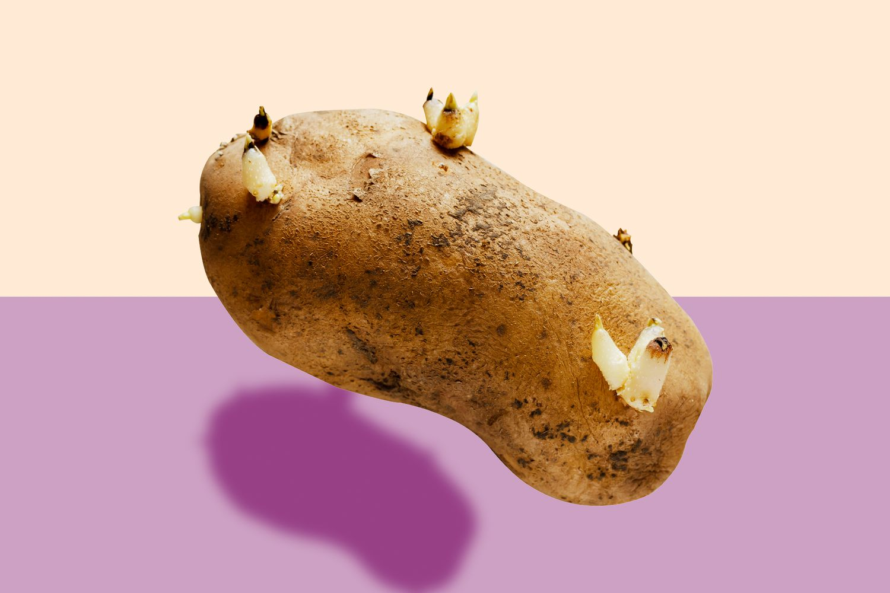

A page specifically dedicated to POTATOES only.
A potato is a starchy root vegetable native to the Americas. Their name comes from the Spanish word patata.
Potatoes can be consumed in many ways. More than half a billion people in this world consume potato on a daily. Potatoes are used to make french fries (one of the most popular fast food sides).